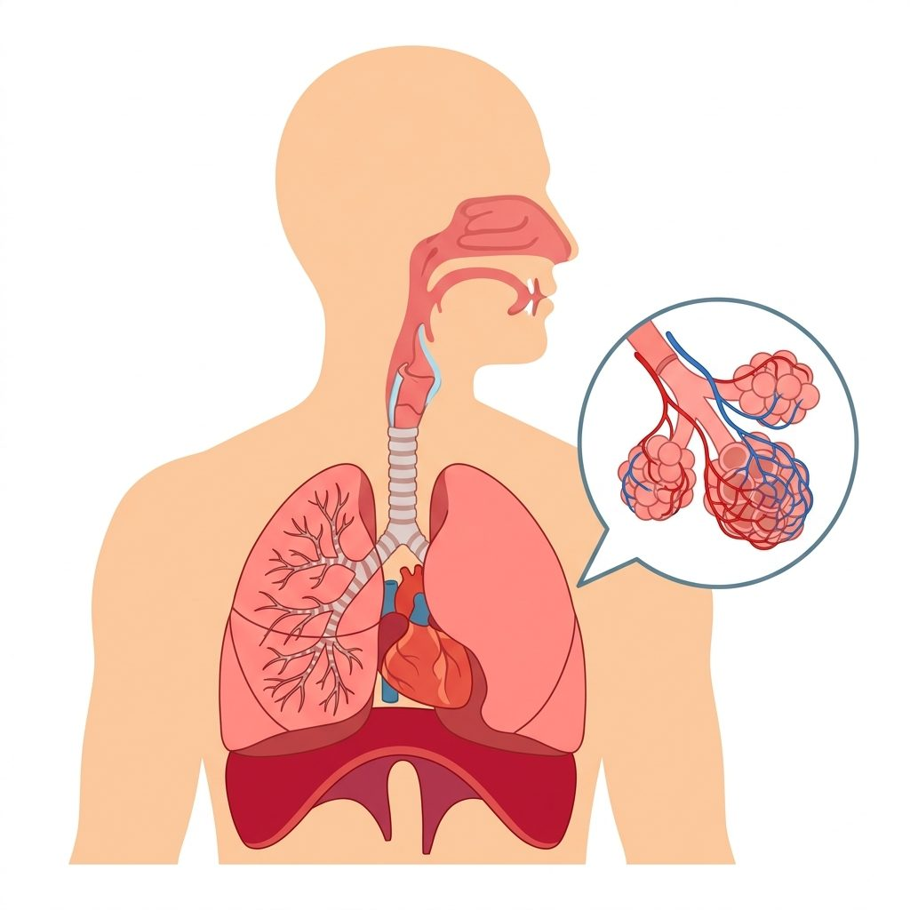
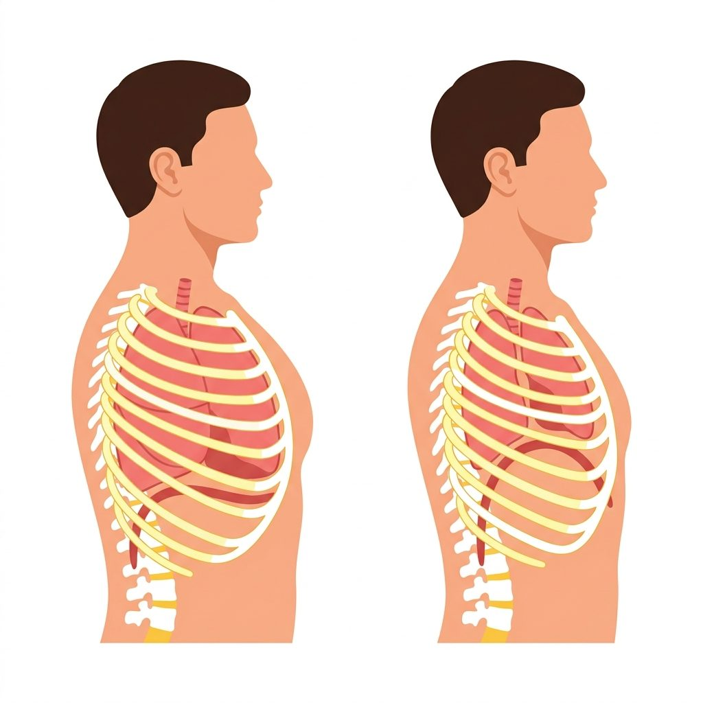
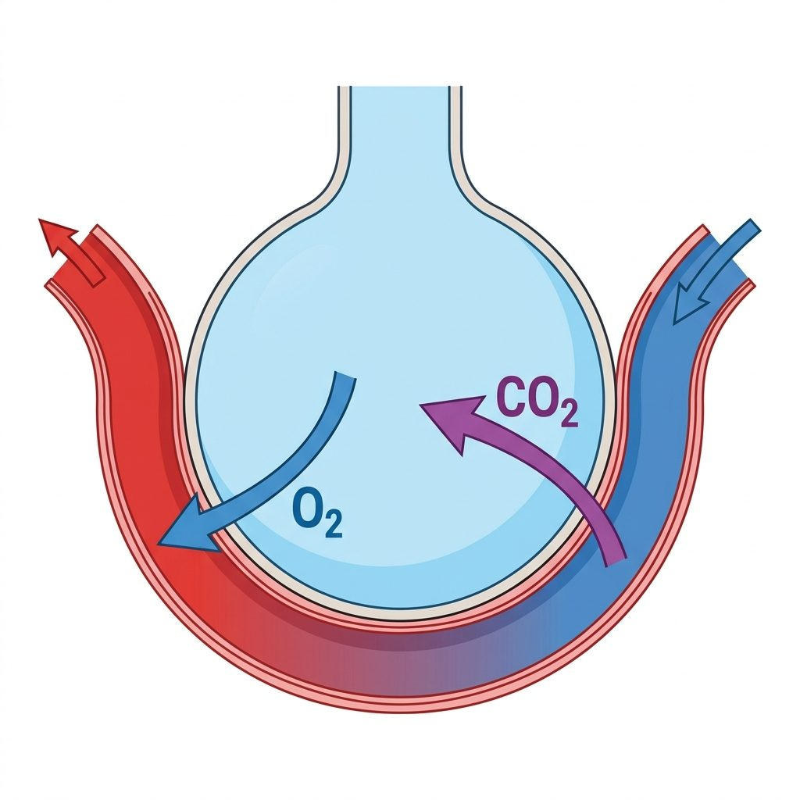

00 Bienvenue, jeune scientifique
Dans cette leçon interactive, tu vas te glisser dans la peau d'un médecin et d'un biologiste pour étudier comment notre corps capte l'oxygène contenu dans l'air pour le distribuer à nos organes, et comment il rejette les gaz usagés.
L'anatomie respiratoire
La mécanique du souffle
Le laboratoire des alvéoles
La santé des poumons
- Nommer et localiser les organes respiratoires sur un schéma anatomique.
- Expliquer le trajet de l'air de l'inspiration jusqu'à l'expiration.
- Décrire les mouvements du diaphragme et de la cage thoracique.
- Expliquer comment se font les échanges gazeux au niveau des alvéoles.
- Pourquoi l'organisme a besoin de dioxygène pour produire de l'énergie.
- La différence entre la ventilation mécanique et la respiration cellulaire.
- L'importance d'un air propre et les effets nocifs de la pollution et du tabac.
- Pourquoi il faut régulièrement aérer notre classe pour mieux travailler.
01 L'Anatomie : Les organes respiratoires
Notre corps possède un réseau de conduits pour amener l'air jusqu'aux poumons. Observe notre schéma anatomique. Clique sur les ronds rouges ou sur les noms des organes dans la liste pour découvrir le rôle de chaque partie.

Organes explorés : 0 / 11
Fiche d'exploration
Clique sur un numéro rouge du schéma ou sur un organe ci-dessous pour découvrir ses secrets anatomiques.
02 La Mécanique : L'inspiration et l'expiration
La ventilation est le mécanisme physique qui fait entrer et sortir l'air de nos poumons. Elle repose sur le travail des muscles de notre cage thoracique et surtout du diaphragme. Observe le schéma comparatif et clique sur les numéros pour voir les mouvements.

Mécanique respiratoire
Clique sur un numéro du schéma comparatif pour observer les changements physiques lors de la ventilation.
| Muscles | Inspiration | Expiration |
|---|---|---|
| Diaphragme | Se contracte (s'abaisse) | Se relâche (remonte) |
| Cage Thoracique | S'élargit et monte | Se resserre et descend |
| Volume des poumons | Augmente (l'air entre) | Diminue (l'air sort) |
03 Les Échanges gazeux : L'air et le sang
L'air inspiré finit sa course dans les alvéoles pulmonaires. C'est ici, à l'échelle microscopique, que l'oxygène pénètre dans notre sang et que le gaz carbonique est éliminé. Clique sur les numéros pour suivre le voyage des gaz.

Zoom alvéolaire
Clique sur un numéro de l'alvéole microscopique pour découvrir comment se font les échanges gazeux.
Les chiffres de l'échange
300 millions : C'est le nombre d'alvéoles par poumon (600 millions en tout). Dépliées, elles représentent la surface d'un demi-terrain de tennis entier ! Retrouve d'autres chiffres records dans l'onglet 4.
04 Approfondissement : Respiration et Santé
Respirer n'est pas seulement faire entrer de l'air dans notre poitrine. C'est une réaction vitale qui se produit au cœur de chacune de nos cellules. Découvre l'équation de la vie et comment prendre soin de nos poumons.
En biologie, on fait bien la différence entre ces deux phénomènes :
1. La ventilation (Mécanique)
C'est l'action physique de souffler et d'inspirer de l'air à l'aide du diaphragme.
2. La respiration cellulaire (Chimique)
C'est la réaction chimique dans nos organes. L'oxygène brûle le sucre de nos aliments pour fabriquer l'énergie dont nos muscles ont besoin pour bouger.
L'équation de l'énergie
Nutriments (Sucre) + Oxygène (O2)
➔ Énergie + Dioxyde de carbone (CO2) + Eau
Les ravages du tabagisme
La fumée de cigarette contient des goudrons qui collent les cils vibratiles de notre trachée (qui ne peuvent plus nettoyer les impuretés) et encrassent la fine membrane de nos alvéoles, rendant le passage de l'oxygène très difficile.
La pollution de l'air
Les gaz d'échappement et les microparticules irritent nos bronches et peuvent provoquer de l'asthme, une maladie qui rétrécit les conduits d'air et rend le souffle court.
Pourquoi aérer notre classe ?
Dans une pièce fermée contenant beaucoup d'élèves, l'oxygène s'épuise et le dioxyde de carbone s'accumule. Cela provoque des maux de tête et de la fatigue. Ouvrir les fenêtres 5 minutes réoxygène la classe et réveille les esprits !
12 000 Litres d'air
C'est la quantité incroyable d'air qu'un adulte inspire et expire chaque jour (environ 12 000 litres, soit l'équivalent de 8 000 grandes bouteilles d'eau !).
600 Millions d'alvéoles
Notre poitrine abrite entre 600 et 700 millions d'alvéoles pulmonaires. Ces minuscules sacs d'air microscopiques forment un immense réseau pour capter l'oxygène.
Un terrain de tennis à plat
Si on étalait à plat la surface d'échange de toutes les alvéoles de nos poumons, elles couvriraient environ 100 à 130 m², soit la moitié d'un terrain de tennis complet !
2 400 Kilomètres de conduits
Si on mettait bout à bout toutes les petites branches de notre arbre bronchique (trachée, bronches, bronchioles), on obtiendrait une ligne de 2 400 km, soit la distance entre Bruxelles et Athènes !
Un demi-litre d'eau rejeté
Chaque jour, nous perdons environ 0,5 litre d'eau (500 ml) uniquement en respirant ! Cette eau s'échappe sous forme de vapeur d'eau invisible à l'expiration.
Un éternuement à 120 km/h
Lorsqu'une poussière irrite le nez, un éternuement se déclenche et projette l'air et les microbes à plus de 120 km/h pour nettoyer instantanément les fosses nasales.